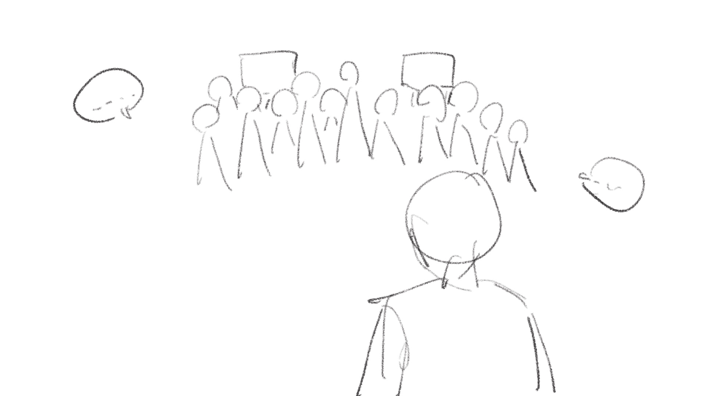
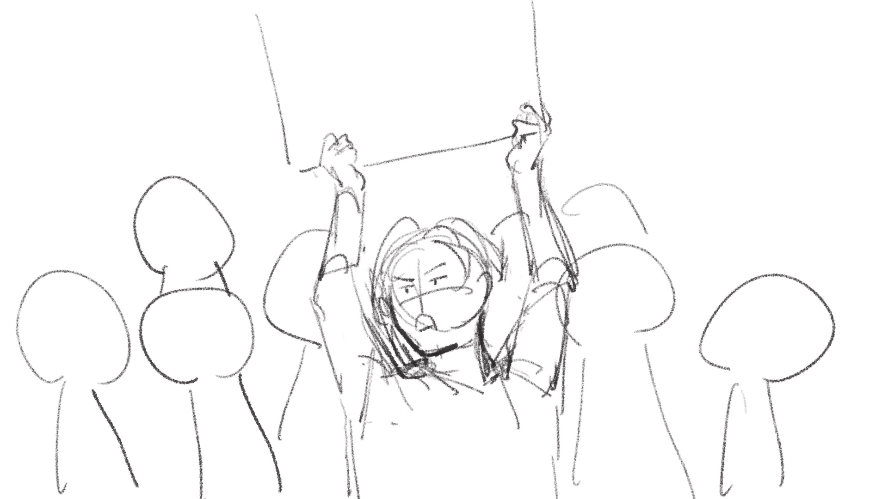
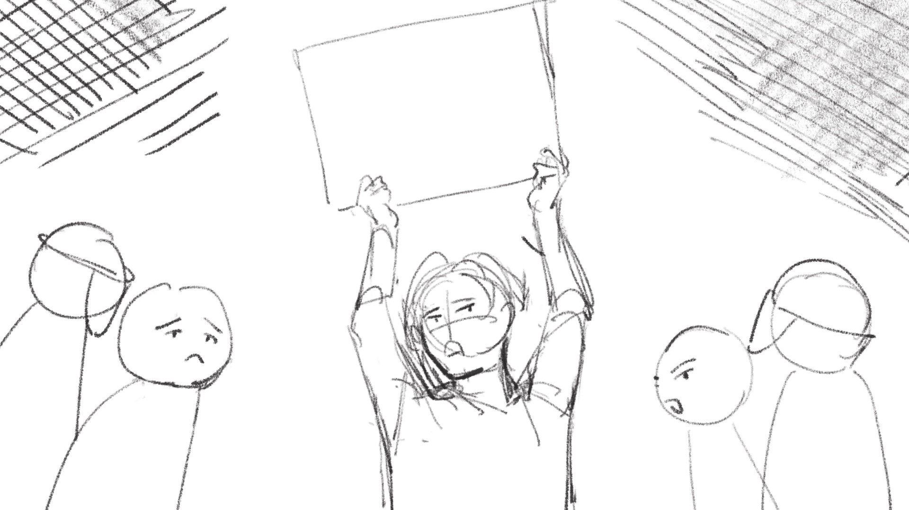
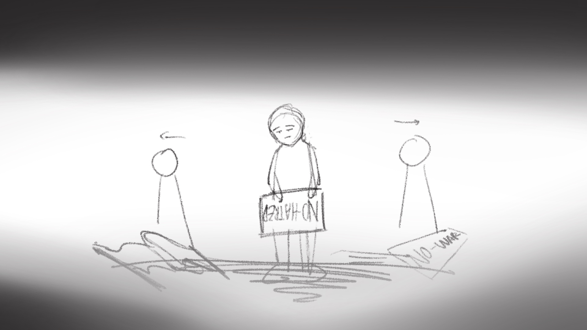
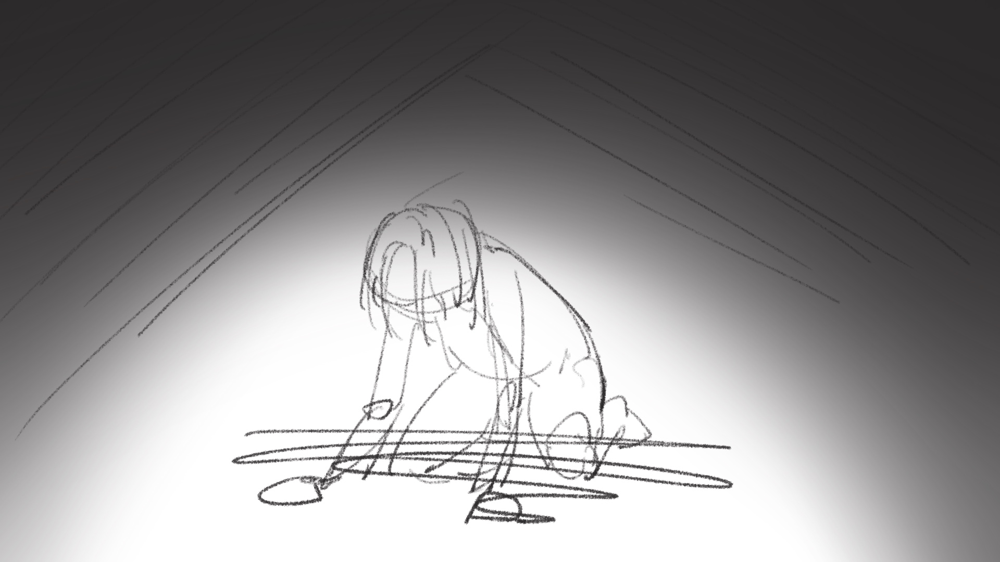
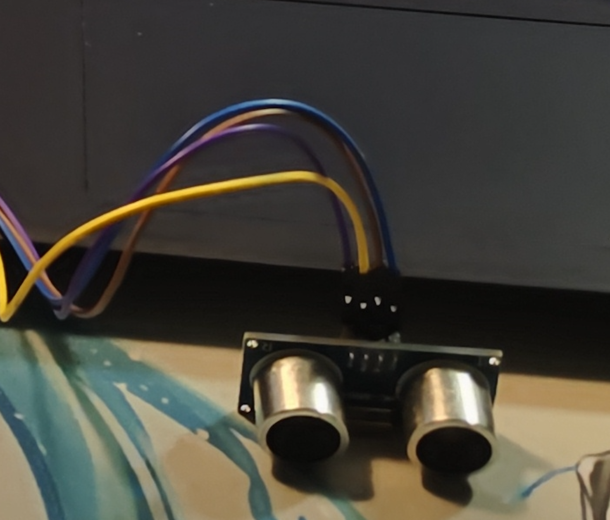
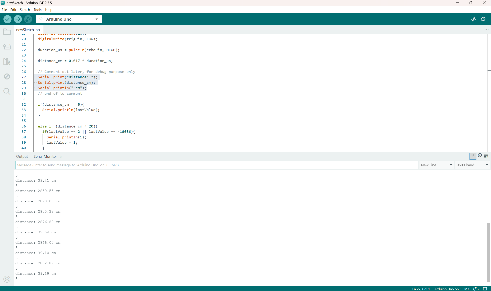
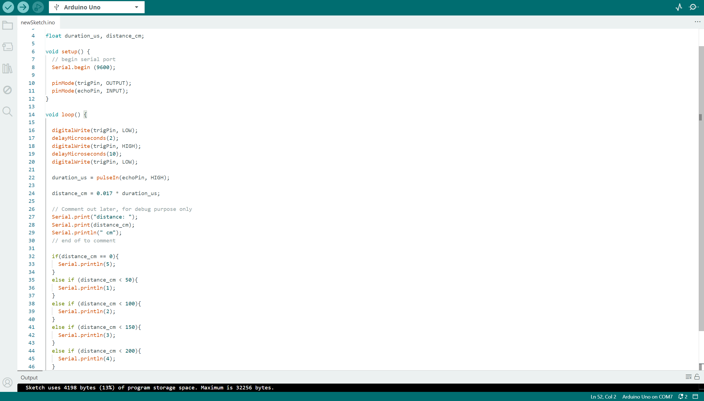
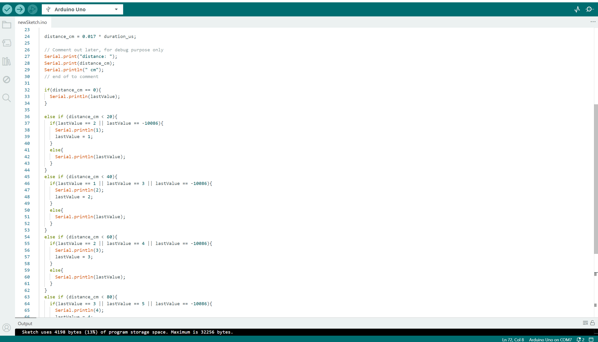
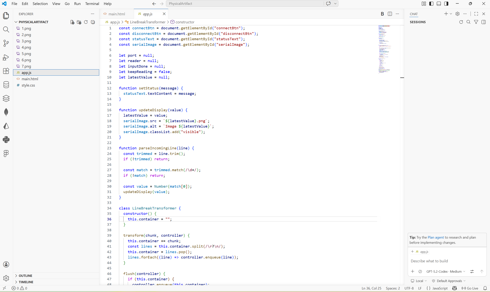

Physical Artifact 2 — Louisa & Jiayin
Mateo’s Disillusion
This artifact connects physical movement to a digital experience using an ultrasonic sensor, allowing users to control what is displayed on screen by moving closer or farther away.

01
Overview
This artifact connects physical movement to a digital experience using an ultrasonic sensor, allowing users to control what is displayed on screen by moving closer or farther away.
Narratively, this interaction represents the moment when Mateo becomes disillusioned with his role as a protester. As he observes both protesters and counter-protesters, along with individuals being taken away by police, his understanding of the situation begins to shift.
By tying this moment to physical distance, the experience reflects how Mateo’s perspective changes as he moves through the space and confronts the realities of the conflict.
02
Intent
The goal of this artifact was to translate a shift in perspective into a physical interaction.
Rather than using buttons or direct input, the experience relies on proximity. As users move closer or farther away, the system changes what is shown, mirroring how Mateo’s perception evolves as he witnesses escalating tension.
The interaction is designed so that movement reveals contrast between opposing groups and the consequences of protest, reinforcing the idea that his disillusionment comes from observation rather than a single moment.
03
Process
The interaction was built using an ultrasonic sensor connected to an Arduino, where distance readings were mapped to different outputs.
The system was designed as a distance-based progression, where:
- Different ranges of movement reveal different parts of the scene
- The output changes in sequence as the user moves
- The interaction reflects a gradual shift in understanding
This allowed the experience to move beyond a simple trigger system and instead function as a continuous interaction tied to physical space.
With the sensor working we were able to create a set of narrative images to showcase Mateo’s journey into disillusionment from protesting that ultimately leads him into choosing a personal peace.

Scene One Draft

Scene Two Draft

Scene Three Draft

Scene Four Draft

Scene Five Draft

Final Narrative image sequence
04
Challenges
The main challenge was hardware reliability where the initial sensor produced inconsistent and unrealistic readings. This caused outputs to jump unpredictably, and the interaction felt unstable and broke the intended progression.
To address this, the code was refined so that:
- Outputs could only transition to adjacent states
- Sudden jumps were reduced
While this improved stability, the issue could not be fully resolved because the problem was with the sensor itself. After a discussion of the issue with the group, it was discovered that the root of the problem was the sensor, leading it to being replaced with a working one. Once the hardware was stable, the interaction behaved as intended and the progression became clear.

Sensor replacement

Code refinement

Code refinement

Code refinement

Code refinement
05
Reflection
This artifact demonstrates how interaction design can represent a shift in perspective through physical movement. By using distance as input, the experience allows users to gradually uncover different aspects of the scene, mirroring Mateo’s growing disillusionment as he observes both sides of the conflict and its consequences.
It also highlights how dependent physical interactions are on reliable hardware. Even with a well-designed system, unstable input can disrupt the experience, reinforcing the importance of testing both the technical and physical components of a design.